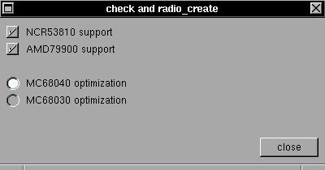

The checkbox and radiobox are useful for selection of multiple exclusive (radio) and non-exclusive (check) options. These widgets just mark the selected options in flags.SYNTAX
struct xtree *check_create(x,y,w,h,label,buffer);EXAMPLE
void radio_create(x,y,w,h,label,buffer);int x,y,w,h;
char *label,*buffer;Create a checkbox or a radiobox in position (x,y), size (w,h) and label 'label'. In 'broadcast' events, this object compare your label with buffer variable: if is equal, then this object is 'actived', else this object is 'deactived'. If you click in this object, the 'label' value is placed in the 'buffer', this object is 'actived' and 'broadcast' is incremented by one.
The check box is for non-exclusive options and the radio box is for exclusive options. In this example you can have a NCR and/or a AMD controller (or none :), but you must choose a 68030 or a 68040 processor, but only one processor can be selected :). To set a flag, the check or radio boxes will copy the ascii string of the box label to this flag.#include <xstep.h> char flagone[64], flagtwo[64], flagthr[64]; void xmain(int n,char *p[]) { window_create(0,0,400,180,"check and radio_create"); check_create(8,8+0*21,400,21,"NCR53810 support", flagone); check_create(8,8+1*21,400,21,"AMD79900 support", flagtwo); radio_create(8,8+3*21,400,21,"MC68040 optimization", flagthr); radio_create(8,8+4*21,400,21,"MC68030 optimization", flagthr); button_create(-8,-8,72,24,"close",window_close); }